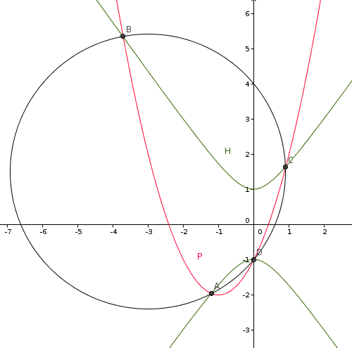
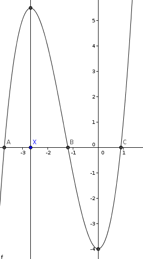

| Choisissez votre langue ! | Choose your language ! |
On considère la parabole P d’équation y = x2 + 2x − 1 et l’hyperbole H d’équation 2x2 − y2 + 1 = 0 dans un repère orthonormé.
1. Montrer que ces deux coniques se coupent en quatre points.
2. Montrer que ces points sont sur un même cercle dont on déterminera le centre et le rayon.

aide
Soit f(x,y)=x²+2x-1-y et g(x,y)=2x²-y²+1=0
Alors les points d'intersection sont solutions de f(x,y)=0 et g(x,y)=0, donc de
uf(x,y)+vg(x,y)=0 pour tout couple de réels (u,v).
Montrer qu'on peut ajuster u et v pour que les coefficients de x² et y² dans uf(x,y)+vg(x,y) soient égaux.
solution
Substituant x²+2x-1 à y dans l'équation de H on trouve :
x(x3+4x2-4)=xQ(x)=0
L'étude des variations de Q avec calcul de Q' donne :

Q croissant de -∞ à -8/3.
Q décroissant de -8/3 à 0.
Q croissant de 0 à +∞
Q a donc 3 racines réelles et l'équation x(x3+4x2-4)=0 a 4 racines réelles.
Reprenant l'indication de l'aide on voit que en prenant u=3 et v=-1 on a uf(x,y)+vg(x,y)=0 soit
x2 + y2 + 6x − 3y − 4=0
qui est l'équation d'un cercle de centre Ω(-3,3/2) et de rayon R=√61/2
We consider the parabola P with equation y = x2 + 2x − 1 and the hyperbola H with equation 2x2 − y2/sup > + 1 = 0 in an orthonormal frame.
1. Show that these two conics intersect in four points.
2. Show that these points are on the same circle whose center and radius will be determined.
hint
Let f(x,y)=x²+2x-1-y and g(x,y)=2x²-y²+1=0
Then the points of intersection are solutions of f(x,y)=0 and g(x,y)=0, hence of
uf(x,y)+vg(x,y)=0 for any pair of real numbers (u,v).
Show that we can adjust u and v so that the coefficients of x² and y² in uf(x,y)+vg(x,y) are equal.
solution
Substituting x²+2x-1 for y in the equation of H we find:
x(x3+4x2-4)=xQ(x)=0
The study of the variations of Q with calculation of Q' gives:
Q increasing from -∞ at -8/3.
Q decreasing from -8/3 to 0.
Q increasing from 0 to +∞
So Q has 3 real roots and the equation x(x3+4x2-4)=0 has 4 real roots.
Returning to the indication of the aid, we see that taking u=3 and v=-1 we have uf(x,y)+vg(x,y)=0 or
x2 + y2 + 6x − 3y − 4=0
which is the equation of a circle with center Ω(-3.3/2) and radius R=√61/2
|
Création Gilles Dubois
Created by Gilles Dubois
|
Janvier 2022
January 2022
|
Version mobile Jquery
Mobile Jquery version
|
|